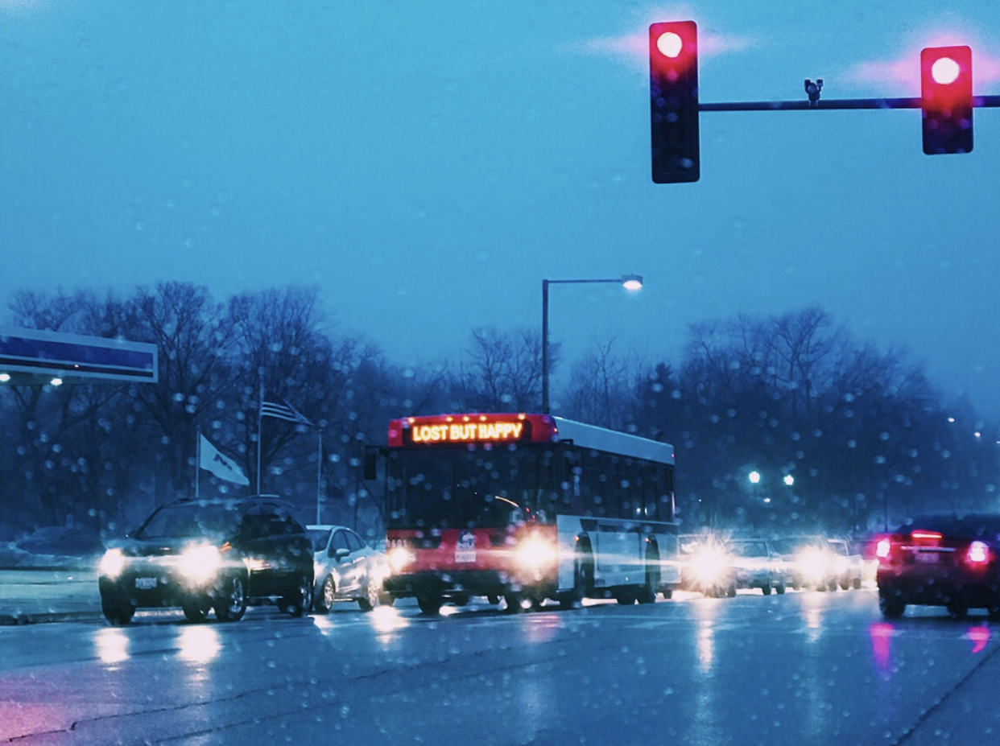
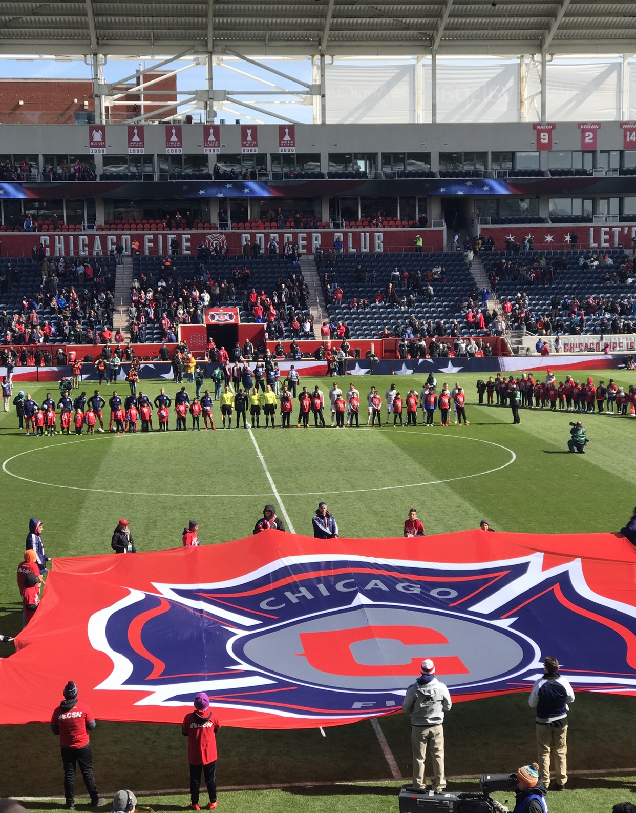
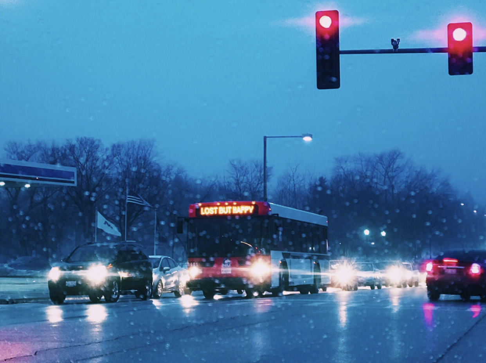
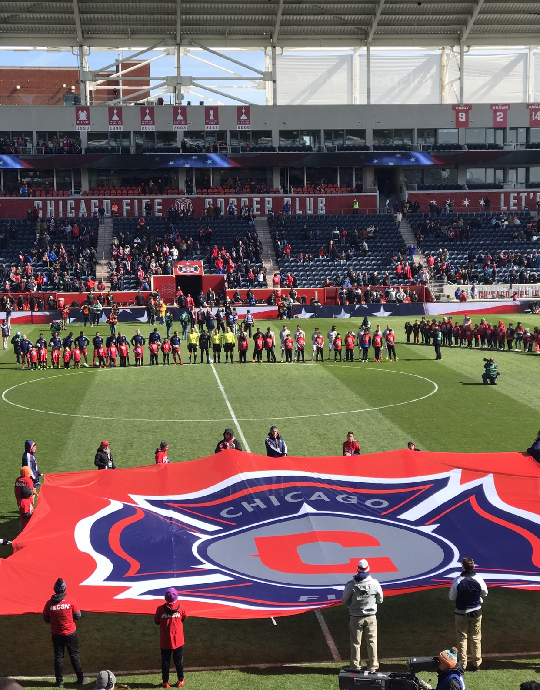

Since the age of 5 I have been playing soccer. I fell into a family that was playing soccer for years.
My father before moving to the united states played for UNAM (Pumas) Academy in Mexico, City.
When I was born there was already a soccer ball at my feet. It wasn't forced on me. I naturally fell
in love with the sport. I eventually started playing recreationally, and eventually moved on to begin
playing academy soccer with bigger clubs such as Chicago Fire Academy. When I entered high school my coach
moved to the Chicago Magic Academy. It is a club that represents Paris Saint Germain (PSG) in the United
States. I played with the club for a couple of years and began receiving walk-on college offers from school, but I decided it was in my best interest to focus on my degree as I did
not see a potential future playing soccer. I am now the president of the Northern Illinois University Men's Soccer Club
where I continue to play my favorite sport.
Me Celebrating goal with teammate after scoring
in regional final. Here is a link to the goal Chris Zamora Regional Final Goal
Photography/Modeling
Photography is something that I have recently begun. I purchased a Canon 77D after graduating high school
and during that summer I had a lot of free time. I enjoy taking photos where the background is scenic, but I also
enjoy taking photos during the night because I believe the sunlight can take away from a photo at times. However
during the time I picked up the camera I also realized that I enjoyed having taking pictures taken of me.
 


